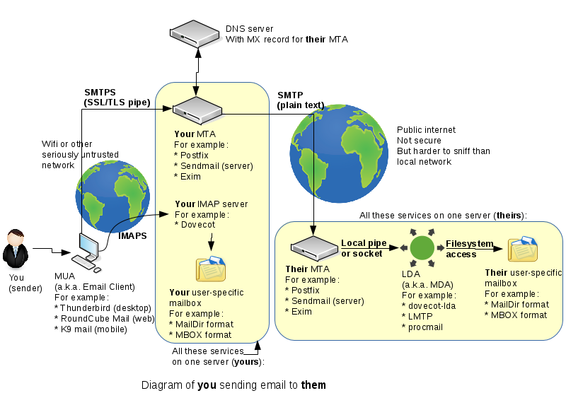

Email Server: IMAP
Eric Brauer

MTA:: Mail Transfer Agent. These essentially handle mail between themselves, once receiving the mail from Mail User Agents (which would be something like e-mail). SMTP is used.
If SMTP is like when your package is sent between two processing centres, IMAP is like when it is put on a mail truck and delivered to your door. Essentially it is the first (or last) kilometre before delivery.
Both of these protocols allow you to sync email from a server to your local machine, where you can interact with it using a program like Thunderbird.
POP3:: Only supports one-way synchronisation. Lets you see the email, but doesn’t modify the copy stored on the server.
IMAP:: Allows such ground-breaking features such as marking an email as read, deleting or moving emails, and having those changes be pushed to the server as well.
As we have stated, traffic between MTAs is unencrypted, and the world waits for a proper solution to this issue (just like we had to wait for something like Let’s Encrypt to make HTTPS accessible to personal sites).
However, a more likely attach vector is questionable Wifi connections such as those you get in a coffee shop (hotspots pretending to be hosted by a coffee shop). So we will focus on encrypting that traffic.
When we speak of security, we very rarely talk in absolutes, because there are none. We can only do what we can.
As stated before, we are going you to install Thunderbird on your host machine. This email client is cross-platform, so it should work on either Linux or Windows.
Thunderbird requires you to set up both IMAP for incoming messages and SMTP for outgoing messages. It will also ask for authentication credentials so that these interactions are secure.
email instance (you can’t re-use the one you used for
www).email.When you compose on email on your host machine and hit ‘send’, you begin an interaction with your email server. This will require authentication. Postfix needs to be configured to accept encryption.
This is our IMAP Service, and should allow us to view and modify messages stored on our server from Thunderbird. This also should require us to log in and to use encryption. Fortunately we can use the same key we just generated.
We are not setting up POP3, so Dovecot should only be listening on ports 143 and 993. Additionally we are going to ignore port 143 since it is unencrypted.
email
instance send an email. This is unfortunately impossible because
outbound emails are blocked on AWS.user.ops345.ca. Watch the logs to verify
that the message is received, and then see if it appears on
Thunderbird.